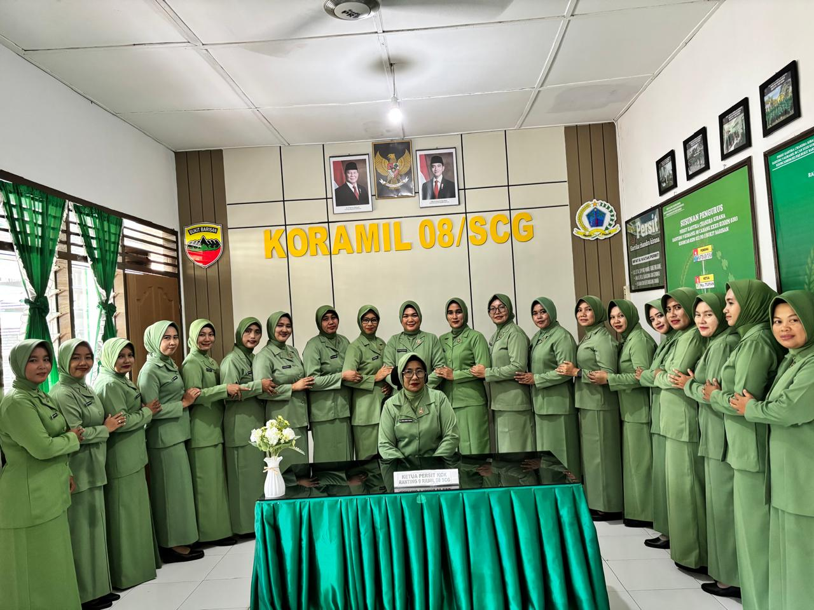

Persit Kartika Chandra Kirana Ranting 09 KORAMIL 08/Secanggang
Sejarah Persit Kartika Chandra Kirana
Persit Kartika Chandra Kirana adalah organisasi istri prajurit TNI AD yang didirikan pada tanggal 24 Oktober 1950. Organisasi ini bertujuan untuk mendukung dan memperkuat peran istri prajurit dalam kehidupan keluarga, sosial, dan kemasyarakatan. Persit Kartika Chandra Kirana memiliki berbagai kegiatan sosial, pendidikan, dan budaya yang bertujuan untuk meningkatkan kesejahteraan anggota dan masyarakat sekitar.
Organisasi ini juga aktif dalam berbagai kegiatan sosial, seperti bakti sosial, penggalangan dana untuk korban bencana, dan program-program kesejahteraan masyarakat. Persit Kartika Chandra Kirana memiliki peran penting dalam mendukung prajurit TNI AD dan keluarga mereka, serta berkontribusi pada pembangunan masyarakat.
Dengan sejarah yang panjang dan kontribusi yang signifikan, Persit Kartika Chandra Kirana terus menjadi organisasi yang relevan dan berperan penting dalam kehidupan prajurit TNI AD dan masyarakat Indonesia.